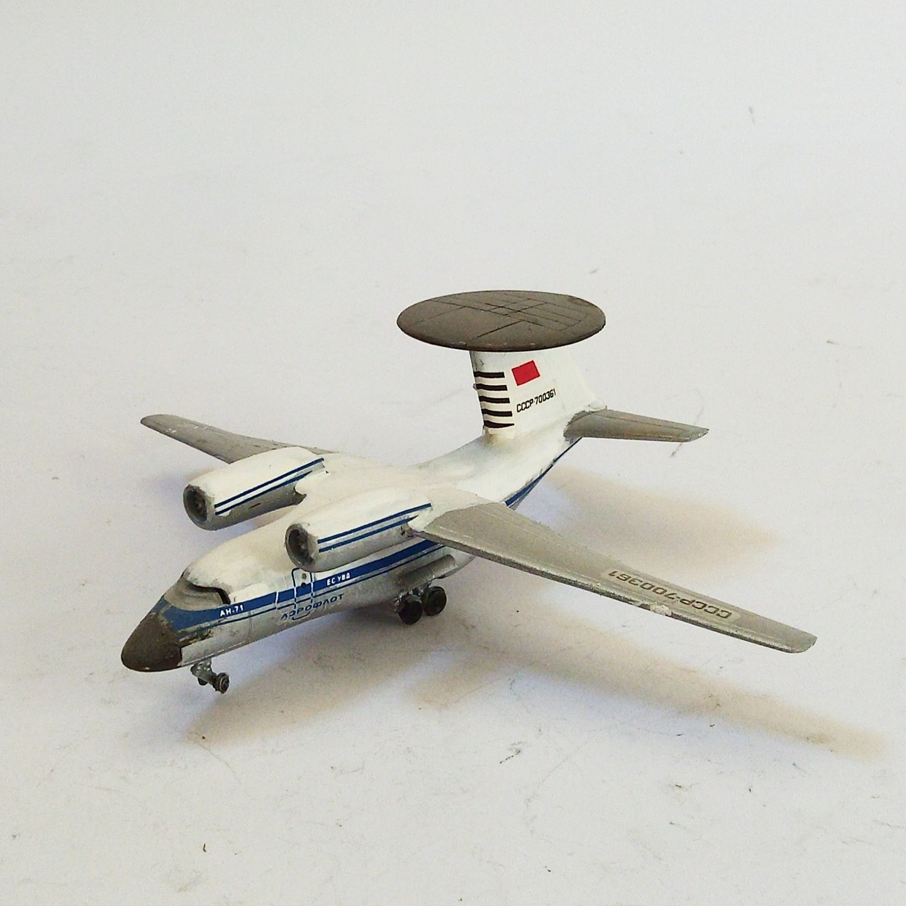
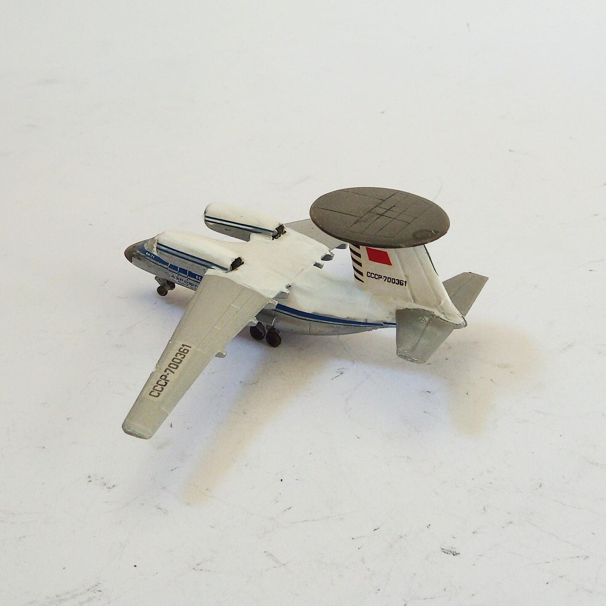

Aerei · scale model archive
Antonov An-71 AWACS
Antonov An-71 AWACS — Kit: Eastern Express, Scale: 1/288. Nice unusual model, radome on top of the fin is amazing, neat little scale #1/288 #Eastern…

Photo gallery

English description
Nice unusual model, radome on top of the fin is amazing, neat little scale
#1/288 #Eastern Express
Descrizione italiana
Bello insolito modello, radome on top del fin è amazing, neat piccolo scala.
#1/288 Express.